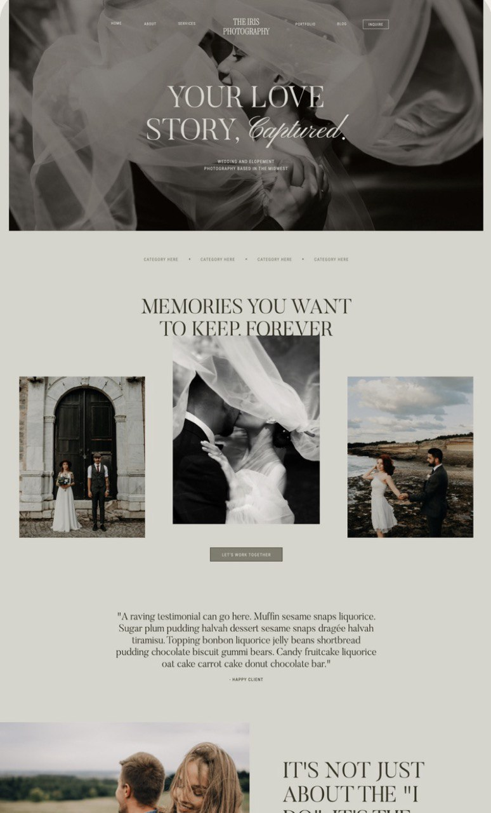
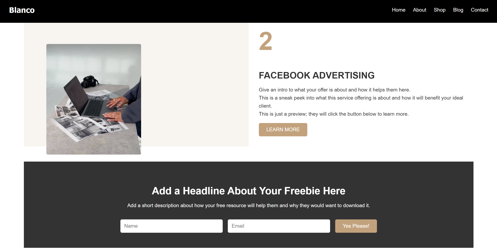
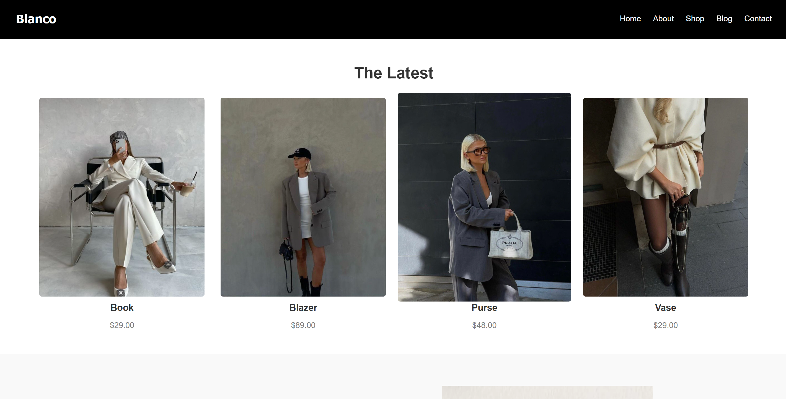
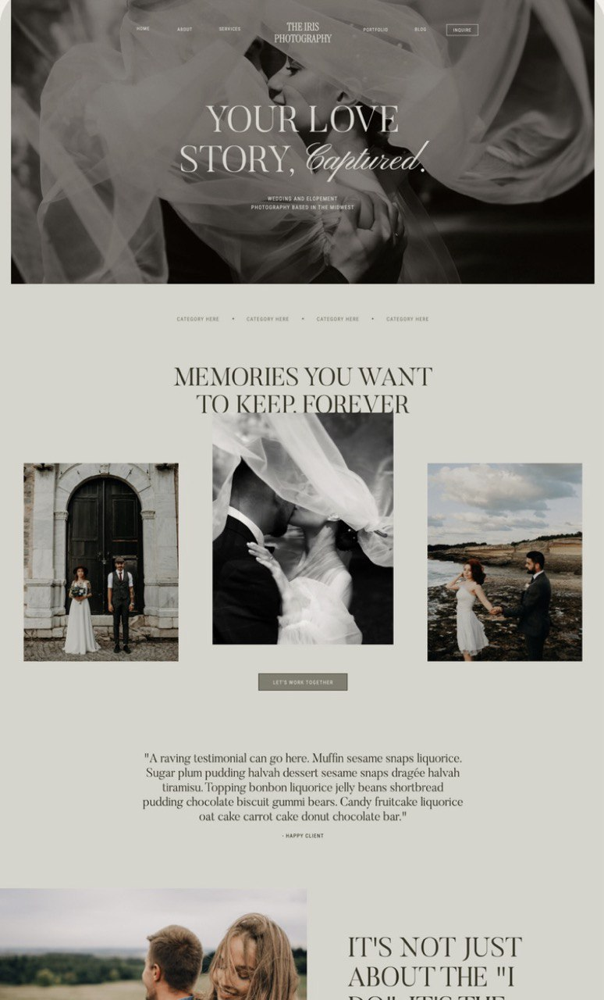
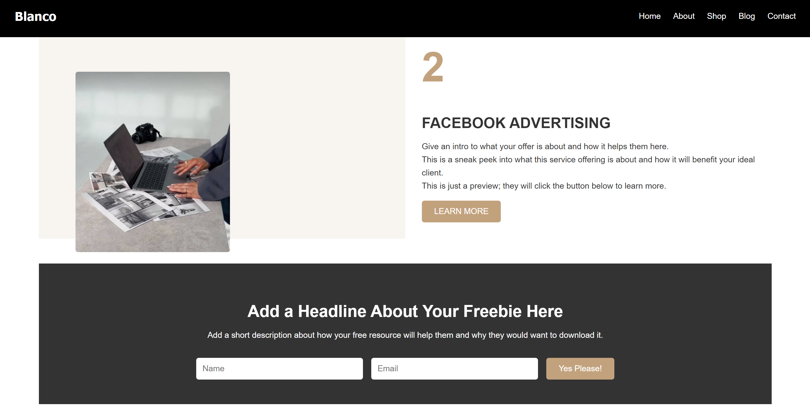
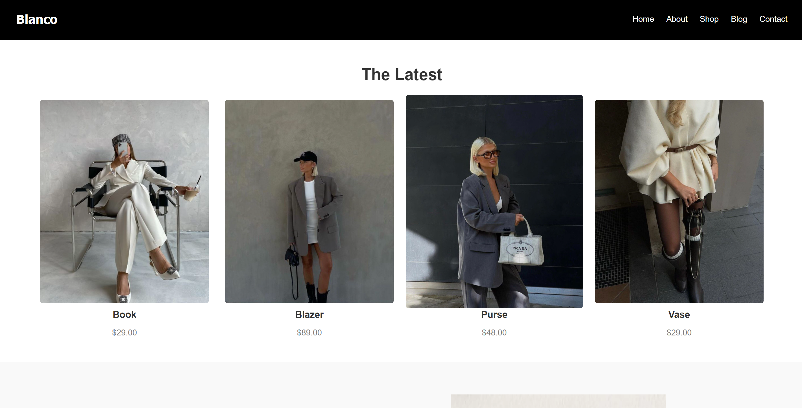

My projects
Welcome to my portfolio! Here you will find a collection of projects that showcase my skills and passion for frontend development. Each project is an opportunity for me to apply the technologies and techniques I have learned to solve real-world problems, enhance user experiences, and create visually appealing designs. Feel free to explore the projects below, where you’ll find more details and links to see the live implementations. These projects reflect my journey and growth as a developer, and I am excited to continue learning and building even more innovative solutions.
View my Projects 




